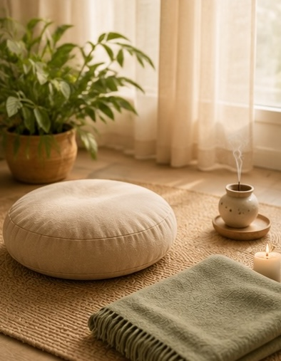

Des temps guidés pour ralentir, respirer et retrouver un état de calme
Par la voix, la respiration et la présence, la praticienne propose des temps de relaxation pour aider chacun à ralentir, se recentrer et s'accorder un moment de pause dans le rythme du quotidien. Elle transmet aussi des gestes simples — comme le Do-In — que chacun peut réutiliser chez soi, en toute autonomie.

Un temps de détente accompagné pas à pas : installé confortablement, on se laisse guider vers le relâchement, la respiration s'apaise, le corps se dépose. Une véritable pause dans la journée.
La voix comme fil conducteur de la détente : portée par un accompagnement doux et posé, la séance invite à lâcher les tensions et à retrouver un état de calme intérieur.
Une pratique de présence, de respiration et de retour à soi. La méditation zen invite à cultiver le calme, l'attention et la simplicité du moment présent, dans un cadre bienveillant et accessible à tous.
Le Do-In est une pratique d'automassage japonais faite de gestes simples, accessibles et doux. La praticienne les transmet dans une démarche de bien-être et d'autonomie, afin que chacun puisse les réutiliser dans son quotidien.
Les huiles essentielles peuvent accompagner les séances par leur dimension sensorielle et olfactive : découverte des senteurs, ambiance apaisante, rituels de détente. La praticienne les utilise avec prudence et dans le respect des besoins de chacun.
Installé confortablement, habillé, on n'a rien à « réussir » : la voix guide l'attention vers la respiration, les appuis du corps, les sensations. Peu à peu, les tensions se défont d'elles-mêmes. Certaines personnes somnolent, d'autres restent présentes — les deux sont parfaits.
Héritée de la tradition contemplative japonaise, elle tient en peu de choses : une assise stable, le dos droit sans raideur, l'attention posée sur le souffle. Ni croyance ni performance — juste l'art, très concret, de revenir au moment présent. Accessible à tous, dès la première séance.
Une pratique japonaise ancestrale d'automassage, cousine du shiatsu : pressions des doigts, tapotements, étirements doux que l'on s'applique à soi-même, du visage jusqu'aux pieds. Sa force : une fois les gestes appris, on les garde pour la vie — quelques minutes par jour suffisent.
Des extraits aromatiques très concentrés de plantes — fleurs, feuilles, écorces, agrumes — obtenus le plus souvent par distillation à la vapeur d'eau. Chacune a sa personnalité olfactive : la lavande évoque la douceur, l'orange la chaleur, l'eucalyptus la fraîcheur. Au jardin, elles parfument et accompagnent la détente — ce sont des produits puissants, utilisés avec précaution, jamais comme des remèdes.
« Respirer, se déposer, revenir à soi. »
Prendre rendez-vous